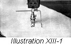

1926—The New-Way Course in Fashionable Clothes-Making
Lesson 13—Braids
The Uses of Braiding
There seems to be something decidedly smart, something decidedly neat and tailored in braid trimming. To the simple gown, devoid of all other trimming, it adds a note of dignity. To the more elaborate gown boasting ruffles or tucks or lace trimmings, it adds a note of smartness. On children's clothes, and clothes for those who are older, braid is a trimming that is always attractive, always fashionable.
A glance through the fashion magazines—whether they depict the styles of Spring or Fall—will reveal the varied uses of braid. Each season has at least one new blouse style, elaborate with colorful braiding. Each season has its one particular dress mode smartly conscious of its braided panels on the skirt. And invariably one finds in the newest hat innovations, one gay little model that can claim nothing but braid as its trimming.
So you see it is quite important that you learn all about braiding. Perhaps, after you complete your course, you will find that there is nothing as appropriate as white braiding on the pretty green or tan linen dress you are making. And then you'll want a hat to match, you know—and here again your knowledge of braiding will prove valuable. Throughout your happy experiences as a clothes-maker you will find many occasions to use this smart, easy-to-make, inexpensive trimming.
Military Braid
Each type of braid is best suited for a certain type of garment. Military braid, for instance, should be used on tailored frocks of serge, tricotine or other heavy material. Unless it is well applied, without a wrinkle or pucker, it has no charm. But military braid that is carefully and correctly applied is a trimming that does justice to the most expensive material and to the most attractive style.
Braiding patterns may be purchased in the pattern department of any large dry goods or department store, and the design may be easily transferred to the material with a warm iron. (See Lesson 14 for exact method of transferring braiding and embroidery designs.) If the braiding is to be done by hand, the design should be stamped on the right side of the material; but if it is to be done by machine, the design must be on the wrong side of the material.
You will find no trouble whatever in applying military braid, as it is usually used as a finish to edges, and to add trimming to collar and cuffs. A design is very rarely used. Simply mark with tailor's chalk the line you wish covered with the braid and stitch it down with small running stitches. Use the finest needle and thread possible and be sure that no large stitches or knots are visible.
The edge-stitcher attachment that came with your sewing machine makes it possible for you to apply military braid quickly and easily. As before, mark the position of the braid with tailor's chalk or basting. Then insert the garment under the edge-stitcher and the braid in the slot of the attachment, so adjusted that the stitching will come very close to the edge of the braid. You will find this method very rapid—and very satisfactory in results.
Applying Braid by Machine
But perhaps most satisfactory of all is the machine method of applying braid with the braider attachment. The underbraider, as it is called, is not always supplied with the sewing machine, but it can be purchased at very little cost from your sewing machine dealer. Your book of instructions will tell you how to attach it to the machine—and we are going to tell you here how to use it.
- To insert your braid in the underbraider attachment, thread it through the tube. When using the underbraider, you must always use the braider foot—your instruction book will tell you how to attach it.
- The line for braiding, or the design, should be on the wrong side of the material, and the material inserted under the foot wrong side up.
- Adjust the tension of the machine for the ordinary length stitch, lower the presser foot to stitch.
- To turn a square corner, raise the presser bar and turn the cloth in the proper direction, lower the bar and proceed to sew. The needle should be allowed to pierce the braid while the turn is being made. This will keep the material from puckering.
- When the end of the design is finished, punch a hole in the material with the point of your scissors, being careful not to cut the material, and push the braid through to the wrong side. Fasten with small back stitches.
Applying Soutache Braid
It is often necessary to apply soutache braid by hand. When you are making a georgette blouse, for instance, and you wish to apply soutache braid as a trimming, you will most likely find that the hand method gives a prettier, neater finish. It takes longer of course, and requires more care—but the result warrants it.
- Stamp the design on the right side of the material.
- Sew the braid through its exact center with a fine back stitch. If you take very small stitches they will scarcely show.
- In choosing a contrasting color braid to apply as a trimming, remember our little chat on color harmony, and do not select a color that jars badly with the color scheme of the dress or blouse you are trimming.
The most common braid used for outlining designs is soutache braid. Others are tricolette braid, rat-tail and a novelty braid which is like three satin cords braided together. These last mentioned braids are softer and more pliable than soutache and lend themselves more readily to designs on soft material than they do to garments whose finish must have a tailored appearance.
Some of the novelty braids, which are usually soft and made of silk, must be hemmed on as stitches must not show on the top of the braid. But be sure, when hemming on the braid, that the stitches are taken exactly on the line of design marked on the material.
You will find many uses for braiding besides as trimmings on clothes. Many attractive things for the home can be made—a plain linen scarf with just a touch of braiding to liven it up; a centerpiece for the table with an elaborate braided design for trimming; a smart braided pillow for the guest room. Determine to master this lesson on braiding before you proceed to anything else—for you will find many interesting occasions to use it throughout your course, and later when you are planning your new Spring or Fall wardrobe.
Quilting
With the invention of the remarkable quilting attachment on the sewing machine, quilting can now be done with almost amazing rapidity. This attachment saves a tremendous amount of time and trouble.
But it is also necessary for you to know the hand method of quilting, for today there are many new uses for this type of sewing. Hems must often be quilted, and the edges of over-blouses. Linings for both infants' and children's coats are often quilted, and the mode today dictates quilted bottom coats for the lay of fashion. In many cases, where the material is sheer, the quilting must be done by hand although it requires a great deal of time. The stitches must be extremely fine and even, and the lines of stitching must be straight and evenly spaced.
- Baste the thicknesses of material to be quilted together.
- Determine just what pattern you are going to use. The cris-cross pattern is the most frequently used.
- Mark the pattern on the material to be quilted, either with colored basting thread or tailor's chalk.
- Follow this line with fine running stitches, taking the stitches through all the material that is to be held together by the quilting.
Machine Quilting (Illustration XIII-1)
Never attempt to quilt very thick materials on the sewing machine. You are liable to break your needles and probably destroy the tension of your machine. Neither too-thick nor too-thin materials may be quilted on the machine—only those materials of medium thickness, such as satin, serge and the usual cotton materials.
- Find your quilter in your box of attachments. Remember that you can always purchase for very little the attachments that you are lacking.
- Attach the quilter as directed in your book of instructions.
- Mark a line as desired for the first line of stitching. You may crease this line instead of marking it if you prefer.
- Insert the material to be quilted beneath the attachment and stitch on the marked line.
- To facilitate the work of the quilter, attach the underbraider foot to your sewing machine. You will find that the work is accomplished more easily when this foot is attached.
Samples of the following should be sent in for inspection in the envelope provided for the purpose. If samples are not correctly done, corrected work will be returned with full explanation. In the case of COMPLETED GARMENTS, the work will be returned to the student for use. Mail your samples with your answers to Quiz Questions and be sure to put name and address and student number on the outside of the envelope.
Lessons 10-13, Inclusive
Questions
- Where is the lap placket used?
- What is the difference between a lap placket and a stay lap placket?
- (a) How many pieces of material are necessary for an extension placket?
(b) How should you measure for them? - When would you use a fold placket?
- When should a sleeve placket be made?
- How long is a sleeve placket?
- Where is the sleeve placket located?
- Why is a hemmed placket used for thin material?
- When is a set on closing advisable?
- If you are making a plain fly closing, how many inches beyond the center of the garment should you allow?
- How much should be allowed on the right-hand side of the garment if you are making a closing under a box plait?
- In making a garment of heavy material what type of material should be used for the armscye closing?
- How should material be cut for a piping?
- When would you use a piped facing?
- (a) How wide must the material be for a milliner's band?
(b) How is the material cut? - How should you mark the position for snap fasteners?
- Which part of the snap fastener should be sewed on the top of the placket?
- (a) From which side do women's garments close?
(b) From which side do men's garments close? - Which way of the material should tailored buttonholes be made?
- In braiding, on which side of the garment is the design transferred if the braiding is to be done by machine?
Homework Problems
- Make a sample of a continuous placket.
- Make a sample of a sleeve placket.
- Make a sample of a piped facing.
- Make a sample of a plain buttonhole.
- Make a sample of a bound buttonhole.